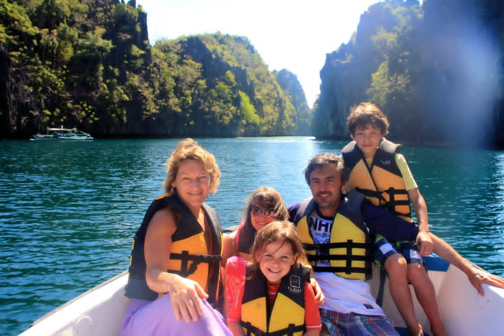
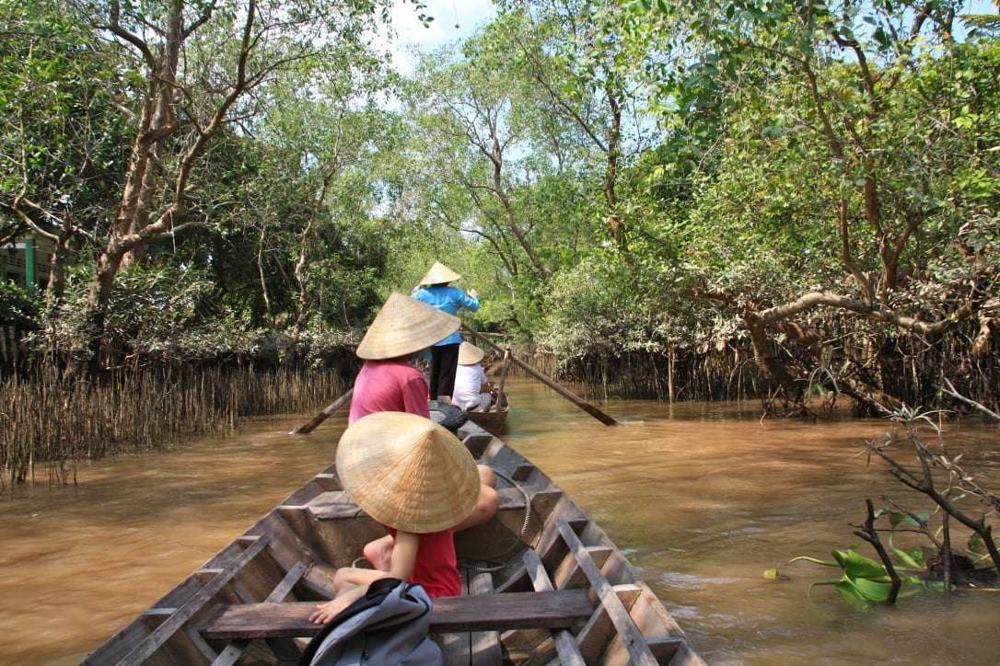
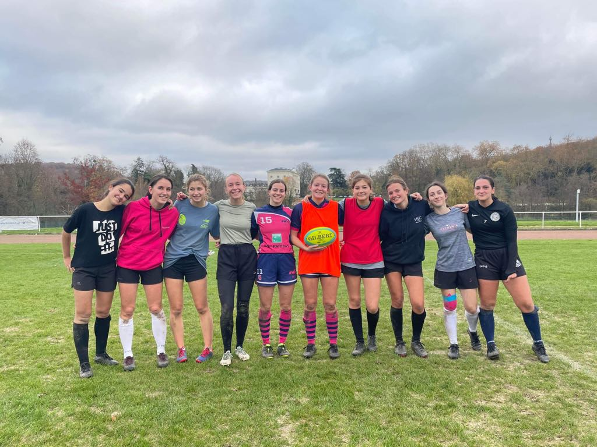

My name is Céleste Journois, I am a french student at HEC Paris. I come from Paris but I have lived in foreign countries for 11 years.
I have lived in four different countries. I was born in Paris, then moved to Madrid when I was three years old. I stayed there 6 years, I became fluent in spanish. Then I lived in Beijing during two years. It was an amazing experience as I discovered a whole different culture, language and had the occasion to travel a lot in Asia.
After that, I moved to Casablanca when I was 12 years old. Another continent, religion and culture. These experiences triggered my curiosity, my adaptability and developped my interest for travels.
Since then, I chose to go on an exchange program in Buenos Aires where I stayed five months. It was an incredible experience as, this time, my parents did not live there with me. I had the occasion to discover Latin America.
I have always been quite sporty. I practiced dance and gymnastics during my childhood. I enjoyed a lot these sports and had the occasion to do some competitions. This allowed me to push myself in order to succeed and win some prices. When I grew up, I enjoyed more collective sports. I practiced handball and was captain of my team. I loved playing it because my teammates where my friends and we were progressing together. Now I play rugby at HEC and am the vice-president of my club. This sports is amazing, it forces you to give all you have on the field. It is very important to be supportive of the other players.
I am involved in different organizations and charities. That is something I particularly enjoy because I have the feeling to be useful to others. I volunteered many times at the Arche, establishments where disabled people come for the day and do some activities and exercices. I learnt that they have a lot to share and that we can learn a lot from them.
As for organizations, I am involved in Deferlante, which is a surf organization. We organize two trips during the year for students at HEC. One in Morocco and the other in Hossegor. It demands a lot of organization and anticipation. I am looking forward to participating to these events that I organized.